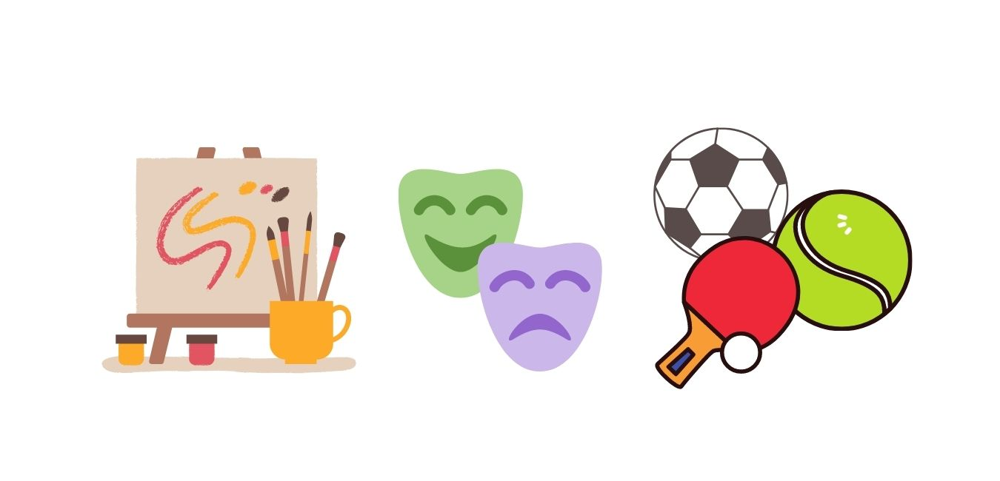

Fase 1: Exploración

Los estudiantes tienen la oportunidad de experimentar los distintos talleres que se ofrecen. Esto les permite identificar los que más les llaman la atención y así encontrar su talento.
Fase 2: Desarrollo
Nuestros alumnos entran a una fase de desarrollo. Después de haber identificado su pasión y talentos, estos son cultividos a lo largo de un programa de tres semestres de duración.